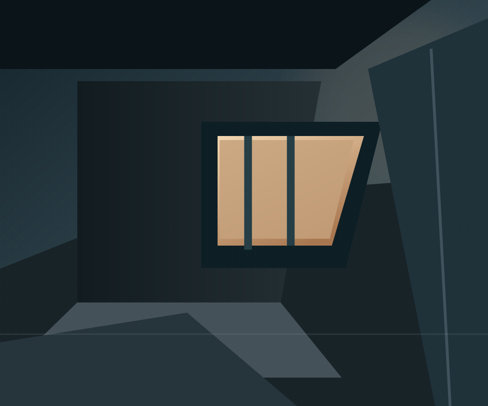

WHEN LIGHT MEETS SPACE / HTML DOCUMENT
Atmosphere is the final detail.
Tercer documento. El efecto Iris anima una máscara circular antes de regresar a la escena inicial.

Tercer documento. El efecto Iris anima una máscara circular antes de regresar a la escena inicial.
